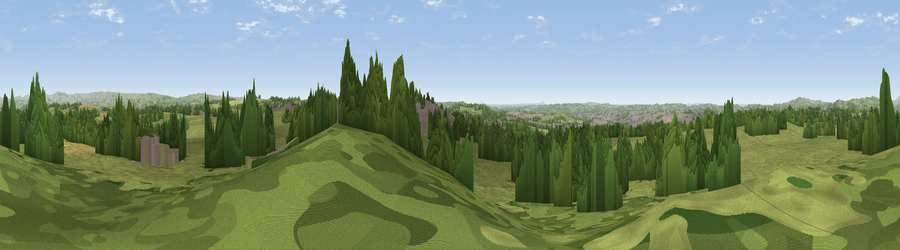

Viewpoint near Werrington
#18944 in England · top 25% of its area beats it · near WerringtonThe view, rendered

A 360° render of this exact spot computed from the terrain model, tree cover and land cover — summer colours, afternoon light, calibrated against photographs of famous viewpoints. Real trees, hedges and buildings will differ in detail.
The panorama
Grey silhouette: terrain skyline in each direction (720 bearings, Earth curvature and refraction included). Dashed green: skyline with trees (+15 m) and buildings (+8 m) as obstacles. Blue strip: how far the ground is visible on each bearing.
Where the view opens
Wedge length = distance to the farthest visible ground on that bearing (vegetation-aware). Rings at 10, 25 and 50 km.
What fills the view
65% grassland · 24% woodland · 9% built-up · 3% cropland
Angular shares of the visible panorama (visual magnitude), not map area. Landscape diversity 0.41 (0–1 Shannon).
Key numbers
More beautiful places nearby
The staircase of upgrades: each row has a higher view potential than everything closer. Driving times are estimates from straight-line distance, calibrated against real road routing — check an actual route before setting out.
| Place | Direction | Drive | Score |
|---|---|---|---|
| Viewpoint near Werrington | SSE · 1 km | ~2 min | 56.3 |
| Viewpoint near Bagnall | NW · 2 km | ~5 min | 57.0 |
| Viewpoint near Brown Edge | NNW · 6 km | ~13 min | 65.2 |
| Viewpoint near Biddulph Moor | N · 11 km | ~20 min | 65.5 |
| Ashenough Hill | WNW · 11 km | ~21 min | 66.0 |
| Viewpoint near Biddulph Moor | N · 11 km | ~21 min | 66.2 |
| Bignall Hill | WNW · 12 km | ~22 min | 75.2 |
| Viewpoint near Mow Cop | NW · 12 km | ~22 min | 80.2 |
53.03262, -2.09875 · source: screening · position refined by local search. Computed location — check access rights before visiting.